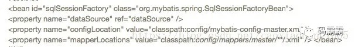
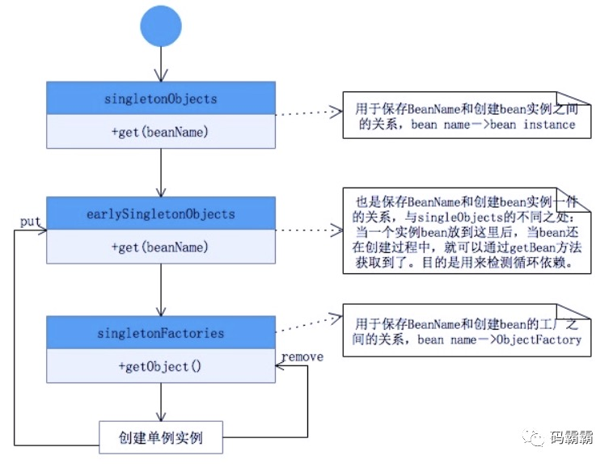

Spring 用到了那些设计模式
简单工厂（非23种设计模式中的一种）
实现方式
BeanFactory。Spring 中的 BeanFactory 就是简单工厂模式的体现，根据传入一个唯一的标识来获得 Bean 对象，但是否是在传入参数后创建还是传入参数前创建这个要根据具体情况来定。
实质
由一个工厂类根据传入的参数，动态决定应该创建哪一个产品类。
实现原理
bean 容器的启动阶段
- 读取 bean 的 xml 配置文件，将 bean 元素分别转换成一个 BeanDefinition 对象。
- 然后通过 BeanDefinitionRegistry 将这些 bean 注册到 beanFactory 中，保存在它的一个 ConcurrentHashMap 中。
- 将 BeanDefinition 注册到了 beanFactory 之后，在这里 Spring 为我们提供了一个扩展的切口，允许我们通过实现接口 BeanFactoryPostProcessor 在此处来插入我们定义的代码。典型的例子就是：PropertyPlaceholderConfigurer，我们一般在配置数据库的 dataSource 时使用到的占位符的值，就是它注入进去的。
容器中 bean 的实例化阶段
实例化阶段主要是通过反射或者 CGLIB 对 bean 进行实例化，在这个阶段 Spring 又给我们暴露了很多的扩展点：
- 各种的 Aware 接口 ，比如 BeanFactoryAware，对于实现了这些 Aware 接口的 bean，在实例化 bean 时 Spring 会帮我们注入对应的 BeanFactory 的实例。
- BeanPostProcessor 接口 ，实现了 BeanPostProcessor 接口的 bean，在实例化 bean 时 Spring 会帮我们调用接口中的方法。
- InitializingBean 接口 ，实现了 InitializingBean 接口的 bean，在实例化 bean 时 Spring 会帮我们调用接口中的方法。
- DisposableBean 接口 ，实现了 BeanPostProcessor 接口的 bean，在该 bean 死亡时 Spring 会帮我们调用接口中的方法。
设计意义
松耦合：可以将原来硬编码的依赖，通过 Spring 这个 beanFactory 这个工厂来注入依赖，也就是说原来只有依赖方和被依赖方，现在我们引入了第三方 —— spring 这个 beanFactory，由它来解决 bean 之间的依赖问题，达到了松耦合的效果.
bean 的额外处理：通过 Spring 接口的暴露，在实例化 bean 的阶段我们可以进行一些额外的处理，这些额外的处理只需要让 bean 实现对应的接口即可，那么 spring 就会在 bean 的生命周期调用我们实现的接口来处理该 bean。（非常重要）
工厂方法
-
实现方式：FactoryBean接口。
-
实现原理：实现了 FactoryBean 接口的 bean 是一类叫做 factory 的 bean。其特点是，spring 会在使用 getBean() 调用获得该 bean 时，会自动调用该 bean 的 getObject() 方法，所以返回的不是 factory 这个 bean，而是这个 bean.getOjbect() 方法的返回值。
-
例子：
-
典型的例子有 spring 与 mybatis 的结合。
-
代码示例
 -
说明：我们看上面该 bean，因为实现了 FactoryBean 接口，所以返回的不是 SqlSessionFactoryBean 的实例，而是她的 SqlSessionFactoryBean.getObject() 的返回值。
-
单例模式
- Spring 依赖注入 Bean 实例默认是单例的。
- Spring 的依赖注入（包括 lazy-init 方式）都是发生在 AbstractBeanFactory 的 getBean 里。getBean 的 doGetBean 方法调用 getSingleton 进行 bean 的创建。
- 分析 getSingleton() 方法
1
2
3
4
5
6
7
8
9
10
11
12
13
14
15
16
17
18
19
20
21
22
23
24
25
26
27
28
public Object getSingleton(String beanName){
//参数true设置标识允许早期依赖
return getSingleton(beanName,true);
}
protected Object getSingleton(String beanName, boolean allowEarlyReference) {
//检查缓存中是否存在实例
Object singletonObject = this.singletonObjects.get(beanName);
if (singletonObject == null && isSingletonCurrentlyInCreation(beanName)) {
//如果为空，则锁定全局变量并进行处理。
synchronized (this.singletonObjects) {
//如果此bean正在加载，则不处理
singletonObject = this.earlySingletonObjects.get(beanName);
if (singletonObject == null && allowEarlyReference) {
//当某些方法需要提前初始化的时候则会调用addSingleFactory 方法将对应的ObjectFactory初始化策略存储在singletonFactories
ObjectFactory<?> singletonFactory = this.singletonFactories.get(beanName);
if (singletonFactory != null) {
//调用预先设定的getObject方法
singletonObject = singletonFactory.getObject();
//记录在缓存中，earlysingletonObjects和singletonFactories互斥
this.earlySingletonObjects.put(beanName, singletonObject);
this.singletonFactories.remove(beanName);
}
}
}
}
return (singletonObject != NULL_OBJECT ? singletonObject : null);
} - getSingleton() 过程图：spring 依赖注入时，使用了 双重判断加锁 的单例模式。
 - 单例模式定义：保证一个类仅有一个实例，并提供一个访问它的全局访问点。
- spring 对单例的实现：spring 中的单例模式完成了后半句话，即提供了全局的访问点 BeanFactory。但没有从构造器级别去控制单例，这是因为 spring 管理的是任意的 java 对象。
适配器模式
- 实现方式：SpringMVC 中的适配器 HandlerAdatper。
- 实现原理：HandlerAdatper 根据 Handler 规则执行不同的 Handler。
- 实现过程：DispatcherServlet 根据 HandlerMapping 返回的 handler，向 HandlerAdatper 发起请求，处理 Handler。HandlerAdapter 根据规则找到对应的 Handler 并让其执行，执行完毕后 Handler 会向 HandlerAdapter 返回一个 ModelAndView，最后由 HandlerAdapter 向 DispatchServelet 返回一个 ModelAndView。
- 实现意义：HandlerAdatper 使得 Handler 的扩展变得容易，只需要增加一个新的 Handler 和一个对应的 HandlerAdapter 即可。因此 Spring 定义了一个适配接口，使得每一种 Controller 有一种对应的适配器实现类，让适配器代替 Controller 执行相应的方法。这样在扩展 Controller 时，只需要增加一个适配器类就完成了 SpringMVC 的扩展了。
装饰器模式
- 实现方式：Spring 中用到的包装器模式在类名上有两种表现：一种是类名中含有 Wrapper，另一种是类名中含有 Decorator。
- 实质：
- 动态地给一个对象添加一些额外的职责。
- 就增加功能来说，Decorator 模式相比生成子类更为灵活。
代理模式
- 实现方式：AOP 底层，就是动态代理模式的实现。
- 动态代理：在内存中构建的，不需要手动编写代理类
- 静态代理：需要手工编写代理类，代理类引用被代理对象。
- 实现原理：切面在应用运行的时刻被织入。一般情况下，在织入切面时，AOP 容器会为目标对象创建动态的创建一个代理对象。SpringAOP 就是以这种方式织入切面的。织入：把切面应用到目标对象并创建新的代理对象的过程。
观察者模式
- 实现方式：spring 的事件驱动模型使用的是 观察者模式，Spring 中 Observer 模式常用的地方是 listener 的实现。
- 具体实现：事件机制的实现需要三个部分，事件源，事件，事件监听器。
ApplicationEvent 抽象类（事件）：继承自 jdk 的 EventObject，所有的事件都需要继承 ApplicationEvent，并且通过构造器参数 source 得到事件源。该类的实现类 ApplicationContextEvent 表示 ApplicaitonContext 的容器事件。
代码：
1 | public abstract class ApplicationEvent extends EventObject { |
ApplicationListener接口（事件监听器）：继承自 jdk 的 EventListener，所有的监听器都要实现这个接口。这个接口只有一个 onApplicationEvent() 方法，该方法接受一个 ApplicationEvent 或其子类对象作为参数，在方法体中，可以通过不同对 Event 类的判断来进行相应的处理。当事件触发时所有的监听器都会收到消息。
代码：
1 | public interface ApplicationListener<E extends ApplicationEvent> extends EventListener { |
ApplicationContext接口（事件源）：ApplicationContext 是 spring 中的全局容器，翻译过来是“应用上下文”。实现了 ApplicationEventPublisher 接口。负责读取 bean 的配置文档，管理 bean 的加载，维护 bean 之间的依赖关系，可以说是负责 bean 的整个生命周期，再通俗一点就是我们平时所说的 IOC 容器。
代码：
1 | public interface ApplicationEventPublisher { |
ApplicationEventMulticaster 抽象类（事件源中 publishEvent 方法需要调用其方法 getApplicationEventMulticaster）：属于事件广播器，它的作用是把 Applicationcontext 发布的 Event 广播给所有的监听器。
代码：
1 | public abstract class AbstractApplicationContext extends DefaultResourceLoader |
策略模式
- 实现方式：Spring 框架的资源访问 Resource 接口。该接口提供了更强的资源访问能力，Spring 框架本身大量使用了 Resource 接口来访问底层资源。
- Resource 接口介绍：source 接口是具体资源访问策略的抽象，也是所有资源访问类所实现的接口。
- Resource 接口主要提供了如下几个方法:
- getInputStream()：定位并打开资源，返回资源对应的输入流。每次调用都返回新的输入流。调用者必须负责关闭输入流。
- exists()：返回 Resource 所指向的资源是否存在。
- isOpen()：返回资源文件是否打开，如果资源文件不能多次读取，每次读取结束应该显式关闭，以防止资源泄漏。
- getDescription()：返回资源的描述信息，通常用于资源处理出错时输出该信息，通常是全限定文件名或实际 URL。
- getFile：返回资源对应的 File 对象。
- getURL：返回资源对应的 URL 对象。
最后两个方法通常无须使用，仅在通过简单方式访问无法实现时，Resource 提供传统的资源访问的功能。Resource 接口本身没有提供访问任何底层资源的实现逻辑，针对不同的底层资源，Spring 将会提供不同的 Resource 实现类，不同的实现类负责不同的资源访问逻辑。
- Spring 为 Resource 接口提供了如下实现类：
- UrlResource：访问网络资源的实现类。
- ClassPathResource：访问类加载路径里资源的实现类。
- FileSystemResource：访问文件系统里资源的实现类。
- ServletContextResource：访问相对于 ServletContext 路径里的资源的实现类.
- InputStreamResource：访问输入流资源的实现类。
- ByteArrayResource：访问字节数组资源的实现类。
这些 Resource 实现类，针对不同的的底层资源，提供了相应的资源访问逻辑，并提供便捷的包装，以利于客户端程序的资源访问。
模版方法模式
- 经典模板方法定义：父类定义了骨架（调用哪些方法及顺序），某些特定方法由子类实现。最大的好处：代码复用，减少重复代码。除了子类要实现的特定方法，其他方法及方法调用顺序都在父类中预先写好了。所以父类模板方法中有两类方法：
- 共同的方法，所有子类都会用到的代码。
- 不同的方法：子类要覆盖的方法，分为两种：
- 抽象方法：父类中的是抽象方法，子类必须覆盖。
- 钩子方法：父类中是一个空方法，子类继承了默认也是空的。
注：为什么叫钩子，子类可以通过这个钩子（方法），控制父类，因为这个钩子实际是父类的方法（空方法）！
-
Spring 模板方法模式实质：是模板方法模式和回调模式的结合，是 Template Method 不需要继承的另一种实现方式。Spring几乎所有的外接扩展都采用这种模式。
-
具体实现：JDBC 的抽象和对 Hibernate 的集成，都采用了一种理念或者处理方式，那就是模板方法模式与相应的 Callback 接口相结合。
-
采用模板方法模式是为了以一种统一而集中的方式来处理资源的获取和释放，以 JdbcTempalte 为例:
1
2
3
4
5
6
7
8
9
10
11
12
13
14
15
16
17
18public abstract class JdbcTemplate {
public final Object execute（String sql）{
Connection con=null;
Statement stmt=null;
try{
con=getConnection（）;
stmt=con.createStatement（）;
Object retValue=executeWithStatement（stmt,sql）;
return retValue;
}catch（SQLException e）{
...
}finally{
closeStatement（stmt）;
releaseConnection（con）;
}
}
protected abstract Object executeWithStatement（Statement stmt, String sql）;
} -
引入回调原因：JdbcTemplate 是抽象类，不能够独立使用，我们每次进行数据访问的时候都要给出一个相应的子类实现，这样肯定不方便，所以就引入了回调。回调代码：
1
2
3public interface StatementCallback{
Object doWithStatement（Statement stmt）;
}利用回调方法重写 JdbcTemplate 方法：
1
2
3
4
5
6
7
8
9
10
11
12
13
14
15
16
17
18
19public class JdbcTemplate {
public final Object execute（StatementCallback callback）{
Connection con=null;
Statement stmt=null;
try{
con=getConnection（）;
stmt=con.createStatement（）;
Object retValue=callback.doWithStatement（stmt）;
return retValue;
}catch（SQLException e）{
...
}finally{
closeStatement（stmt）;
releaseConnection（con）;
}
}
...//其它方法定义
}Jdbc 使用方法如下：
1
2
3
4
5
6
7
8JdbcTemplate jdbcTemplate=...;
final String sql=...;
StatementCallback callback=new StatementCallback(){
public Object=doWithStatement(Statement stmt){
return ...;
}
}
jdbcTemplate.execute(callback);
为什么 JdbcTemplate 没有使用继承：因为这个类的方法太多，但是我们还是想用到 JdbcTemplate 已有的稳定的、公用的数据库连接，那么我们怎么办呢？我们可以把变化的东西抽出来作为一个参数传入 JdbcTemplate 的方法中。但是变化的东西是一段代码，而且这段代码会用到 JdbcTemplate 中的变量。怎么办？那我们就用回调对象吧。在这个回调对象中定义一个操纵 JdbcTemplate 中变量的方法，我们去实现这个方法，就把变化的东西集中到这里了。然后我们再传入这个回调对象到 JdbcTemplate，从而完成了调用。
If you like this blog or find it useful for you, you are welcome to comment on it. You are also welcome to share this blog, so that more people can participate in it. If the images used in the blog infringe your copyright, please contact the author to delete them. Thank you !